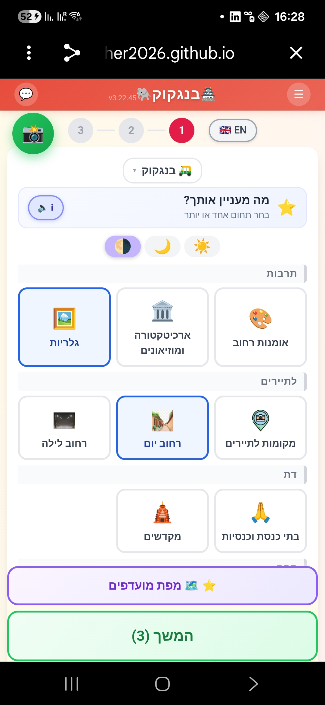
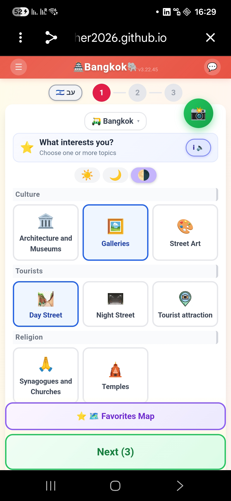
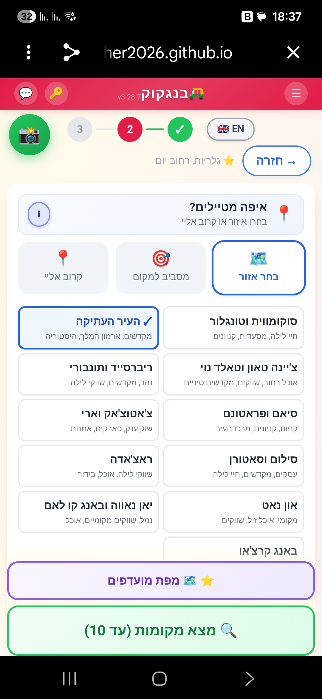
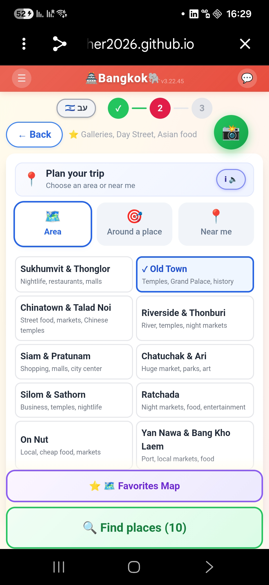
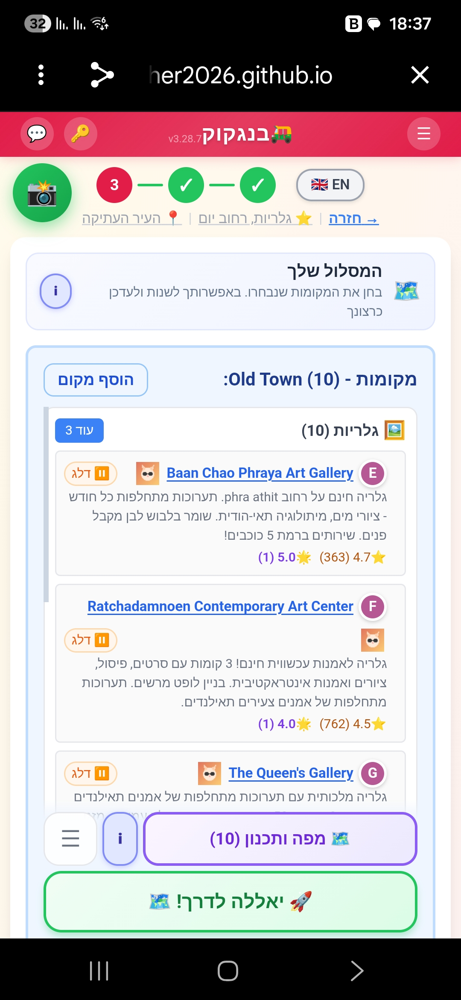
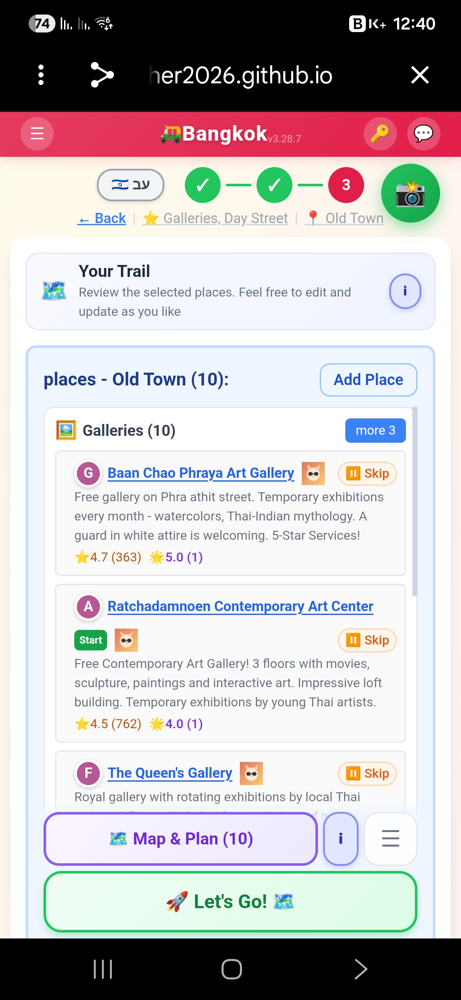

מערכת שמאפשרת לתיירים לתכנן טיול בעיר בקלות וללא הכנה מוקדמת.
Lets tourists plan a city trip easily — no prep required.
זמין כעת:
ערים נוספות יתווספו לפי דרישת המשתמשים.
Currently available:
More cities will be added based on user requests.
תארו לעצמכם שאתם נוחתים במקום שאף פעם לא הייתם בו — נניח בנגקוק — ושואלים חברים שגרים שם:
"מה תמליצו לנו? לאן כדאי לנו ללכת לחצי יום?"
זה בדיוק מה שפופו עושה.
כלים אחרים מספקים לכם יותר מדי מקומות, יותר מדי מידע, זה מבלבל ולוקח המון זמן לברור מה מתאים לכם.
פופו עושה זאת עבורכם: מסלול מוכן או רשימה קצרה של מקומות מוכרים ומומלצים או פנינים חבויות שרק מקומיים מכירים.
רשימת נקודות מגוונת, לפי תחומי העניין שלכם, מאורגנת להליכה נוחה — באזור מסוים, סביב מקום שאתם בוחרים, או הכי טוב סביב המקום שאתם נמצאים בו עכשיו.
3 קליקים ויצאתם לדרך.
Imagine you land somewhere you've never been — say, Bangkok — and ask friends who live there:
"What would you recommend? Where should we go for half a day?"
That's exactly what FouFou does.
Other tools give you too many places, too much information — it's overwhelming, and it takes forever to figure out what's right for you.
FouFou does it for you: a ready-made trail, or a short list — popular recommended places mixed with hidden gems only locals know about.
A varied selection, matched to your interests, organized for an easy walk — in an area, around a place you choose, or best of all, around where you are right now.
3 clicks and you're good to go.
מקומות מועדפים השמורים במערכת, עם השלמה של מקומות מהימנים מגוגל. מקומות שמתאימים לטיולי יום ומקומות לערב/לילה.
Favorite places saved in our system, complemented by trusted places from Google. Suitable for day trips and for evening/night outings.
תכנון מסלולים במערכת פופו, ניווט במסלול בעזרת גוגל מפות.
Plan your trail in FouFou, navigate it with Google Maps.
שלושה צעדים פשוטים — תחומי עניין, אזור, יציאה לדרך.
Three simple steps — pick interests, pick an area, and go.






המערכת נכתבה כדי לעזור לחברים שבאים לבקר ורוצים מצד אחד להתנהל עצמאית, ומצד שני להיעזר בידע שצברנו לאורך תקופת השהות שלנו ושל אחרים בעיר.
גוגל כמקור מידע — לא מספיק ברור וקל לתכנון, אבל מצוין בניווט. ניסיתי לקחת את הטוב משני העולמות.
הייתי הרבה שנים מנהל מוצר ואני אוהב את עולם חוויית המשתמש. Claude Code הגיע לתודעתי ולעזרתי, תודות לפודקאסט ששמעתי של שאול אמסטרדמסקי, בסוף ינואר 2026.
עברתי 3 חודשים של חוויית רכבת הרים ממכרת, שבהם למדתי להכיר את היכולות המדהימות וגם החסרונות הלא מעטים של עולם ה-AI. היה מסע של למידה עמוקה, ואני שמח לחלוק איתכם את התוצר של אותו תהליך — את פופו.
The system was written to help friends who come to visit and want, on the one hand, to conduct themselves independently — and on the other hand, to use the knowledge we've accumulated during our stay and the stays of others in the city.
Google as a source of information is not clear enough or easy to plan with, but it's excellent at navigation. I tried to take the best of both worlds.
I was a product manager for many years, and I love the world of user experience. Claude Code came to my attention — and to my aid — thanks to a podcast I heard by Shaul Amsterdamski, at the end of January 2026.
I went through three months of an addictive roller-coaster experience, during which I got to know the amazing capabilities and also the many shortcomings of the AI world. It was a journey of deep learning, and I'm happy to share with you the product of that process — FouFou.
פופו רץ ישר מהדפדפן. בלי הורדה, בלי הרשמה.
FouFou runs straight from your browser. No download, no signup.
פתח את פופו Open FouFou